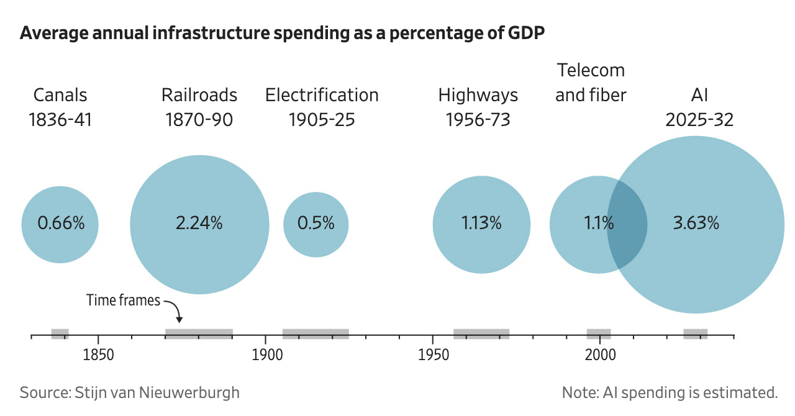
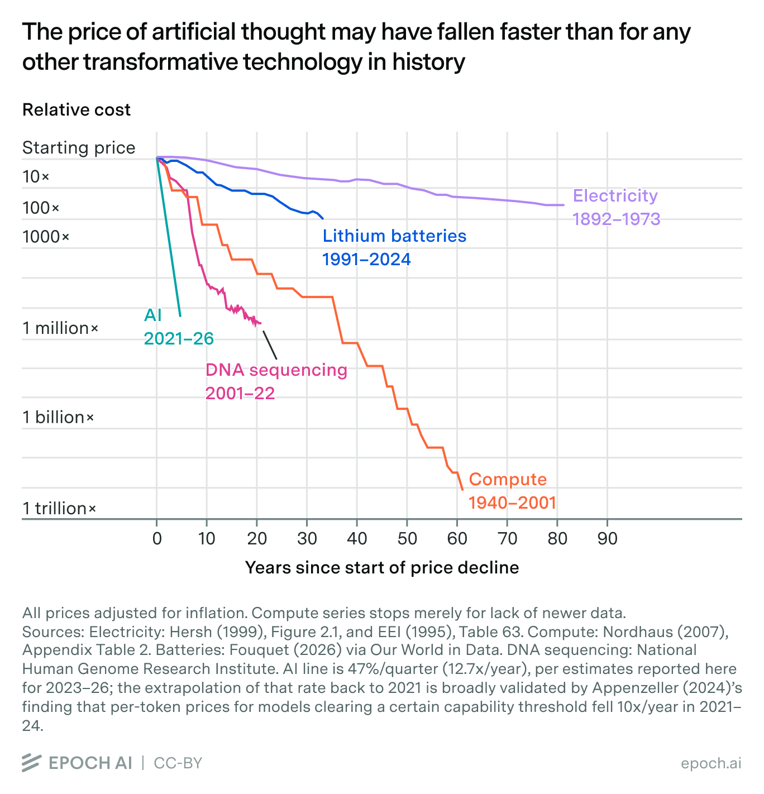

Rabbit Hole #4: Leveraging the Plunging Price of Thought
Intelligence is getting cheaper by about 47% every quarter. What that means, who loses, who wins, and why my mom is thrilled.
This week’s Deep Dive is something that is probably going to make my Vietnamese mother very happy - and usually, there’s only one thing that makes her this happy: a good discount. When things get cheap, cheaper, and cheapest. Well, Mom, good news for us - this week’s rabbit hole is about how fast intelligence is getting cheaper and cheaper and cheaper.
Epoch AI wrote a very interesting piece on this called “The Plunging Price of Thought”. If there’s anything you need to take away from this article, let it be that AI is now officially the fastest growing infrastructure that we have observed in the contemporary evolution of mankind.

In an article written by Konrad Putzier and Justin Lahart that was published in the WSJ most recently, it was highlighted that data-center spending is greater than that for the canals, railroads, and grid - COMBINED. Let that sink in for a second. What on earth are we doing, guys? We are really making an unprecedented amount of investment that the world hasn’t quite prepared itself for. So if we zoom out, the investment we are putting into this AI build-out is making the investments made to fund other US infrastructure projects look very minuscule.
To be exact, the total investment in data centers and related AI infrastructure is projected to total $10.3 trillion from 2025 to 2032.
So with all of this investment in public infrastructure, what does this mean for the users?
This means that we are getting the (ever-improving) models for cheaper and cheaper (hopefully). Well, what does that mean? Why would Mama Tran be happy? Well, Mom - that means we will be getting an amazing level of intelligence for a lot cheaper. Mom, remember how you spent all that time explaining to me how real estate math works? Guess what, you don’t have to do that anymore. Hopefully, I can use these amazing models to keep an eye out for the right house investment for me. And voilà, I made it as a real estate guru. WOOHOO. No, not quite. But you get the point.
Epoch measured that since 2023, the cost of a given level of performance has fallen about 47% every quarter (that’s roughly 14x per year). Here’s a concrete example to make this easier to understand.
In January 2025, Epoch estimates that OpenAI’s o3 cost roughly $0.30 per question to reach a particular level on GPQA Diamond, a difficult graduate-level science benchmark. Less than 18 months later, GPT-5.6 Luna achieves approximately the same performance for $0.0004 per question.
That is a 725x decline.
This is INSANE! Mom! That’s cheaper than your best chicken auntie dealer. I don’t think Asian Auntie would be able to pull that much of a discount for us.

Amazing! Doesn’t this mean that it should be cheaper and cheaper to run AI businesses? How come all the AI startups are still spending an arm and a leg on their AI models? For example, Harvey’s AI costs got so high that its gross margins plunged from 50% at the start of the year to -50% by June (according to a person familiar with the matter) - now there might be some exaggeration behind this estimate, but regardless, that’s a significant shift. As a result, the legal tech startup responded by releasing its own model, built on top of cheaper open-weight AI.
So what’s happening here? It might be the case that for the initial period when we just release the model, that’s the time where you have to pay a premium for the model - but then a couple weeks later, a new model of comparable performance is released and you go back to paying a cheaper price for a much improved performance. HURRAY! Mama Tran is happy again.
For a long time, a lot of technology strategy implicitly treated intelligence as a scarce resource. You build workflows around expensive models. You reserve the smartest model for difficult cases. You worry about inference bills. You design systems around today’s cost structure. I know this way too well because I used to be part of a team that designed optimal token-usage systems for our clients. There was a time when token-maxing was truly a big deal.
But what happens if a capability that costs $100 today costs $8 next year, $0.60 the year after that, and pennies after that? What do you do then? At this point, sure, token-maxing is important, but it’s not like it’s going to break the bank if you don’t.
Intelligence is getting a lot cheaper. At that point you no longer really argue with each other about this architecture or that architecture. You just sit there and enjoy the plummeting price of intelligence. It becomes commoditized.
Translation - this means you stop asking “How can I optimize my tokens?” or “Is my AI design better?” - because it really doesn’t matter anymore. Your AI design is great today but will probably be shit tomorrow - not because your product is shit but because intelligence just got cheaper and better once again. The thing that is called AI Harness, AI Prompting, AI whatever is disappearing into the ether. The margin you gain from having a “Better AI Design” than your next-door neighbor is minuscule. TINY. Negligible. NOTHING. It’s peanuts now. Truly tomayto, tomahto. Ladies and gents, AI is now just the roads you drive on. This infrastructure buys you the luxury of asking yourself the question “What would I build if intelligence were effectively free?”
For starters - you should only be building things that capture high value. Because guys, guys, it’s hard enough to build shit as is. Why on earth would you want to build anything that doesn’t capture high value? Like it or not, you will be at that coworking space till 3AM pulling your hair out. Might as well pull your hair out solving a BIG ENOUGH PROBLEM, a DURABLE VALUE, or in this day and age, people call it a MOAT (what an overused term but sure, we will roll with it anyway). And for startups, it changes where durable value can live. If model capability commoditizes this quickly, simply wrapping today’s expensive intelligence is an assured losing strategy. All of those AI Harness Companies - I’m looking at you. Because at that point, you are just going to be waiting for the day that cheaper and smarter models take you out of the game. The more durable layers may be proprietary workflows, distribution, physical infrastructure, data generation, data capture, closed-loop learning or vertical integration - the plethora of things that won’t show up naturally just because our giga AI labs build more data centers (which we all know they will).
For robotics, cheaper inference changes what can happen continuously. Instead of calling a large model occasionally, machines can potentially run enormous amounts of perception, simulation, planning, verification, and reasoning all the time.
For science, imagine every experimental result spawning thousands of computational hypotheses because the marginal cost of generating and filtering them approaches zero.
And healthcare may be especially interesting. Today, we implicitly ration expertise because physicians, specialists, diagnostic interpretation, and clinical judgement are scarce. AI does not eliminate the need for those people. But if competent machine reasoning becomes dramatically cheaper, the economically rational amount of reasoning applied to each patient could increase enormously.
Here are a couple of fun questions to tickle our brains:
- What becomes abundant when intelligence becomes cheap?
- And what becomes scarce instead?
- If the same intelligence becomes 100x cheaper, which businesses become dramatically stronger, and which ones lose out?
The top-of-mind thought is that the bottleneck moves toward things AI cannot cheaply manufacture - things like high-quality proprietary data, access to the physical world, experiments, patient interaction, regulatory permission, trusted distribution, hardware, energy and perhaps most importantly, the ability to tell whether an answer is actually correct.
That last point is interesting - the ability to tell whether an answer is actually correct. This is unironically hard. Why? Because there will be a point when we no longer know if the world we perceive is the world as it is or if we have been given a narrative generated by our beloved models, and therefore perceive the world as such. This is when it’s ever more important to develop things like common sense, an internal compass, or taste (or honestly, a combination of all three). These are ingredients in life that were once underrated but now, overnight, might have become the most precious things in humanity. I have a short personal story to tell on this one. I used to be able to detect AI slop or AI generated texts very easily - until one day I couldn’t anymore - not because I’m lazy or anything - it just completely slipped past my AI-dar. What a huge wake-up call that was. That was the alarm bell for me to stop consuming trashy AI-generated content on LinkedIn. Anyhow - I digress. So, where were we?
Ah, yes.
So - in moments where it’s hard to predict what’s going to happen in the next couple of years, the best way to figure this out is to look at the past and learn what history suggests will happen. The most apt analogous historical milestones that offer the same magnitude of an engineering feat would be the railroads and the telecom. Interestingly, these two eras suggest something counterintuitive:
When the price of a foundational capability collapses, the biggest long-term winners are often not the companies selling that capability (in our case, it’s intelligence; in their case, it’s railroads or telecom). They are the companies that reorganize the rest of the economy around what once was scarcity, but is now abundance.
For example, railroads created value, but it’s people like Gustavus Swift, who realized that you didn’t have to ship living cattle east and slaughter them locally (you could slaughter centrally and ship refrigerated meat), that ended up capturing the value by redesigning meat production around railroads. In Swift’s case, when the railroads wouldn’t provide refrigerated cars, Swift built them himself. That eventually contributed to a deeply vertically integrated meatpacking system.
In the telecom and internet era, we replace the cost of moving atoms with the cost of moving bits. And once again, the same thing happens: as communication becomes cheaper, usage explodes. There is a long historical pattern across mail, telegraph, and internet: quality improves, prices fall, usage increases. If you don’t know what I’m talking about - you should go watch You’ve Got Mail (1998) or if you want a more modern take, then you can watch Past Lives (2023). Both great movies - for different reasons. But yes, they both have one thing in common, the characters in both GREATLY benefit from having much better communication pathways.
For Meg Ryan and Tom Hanks to be writing each other emails non-stop, an enormous amount of money went into infrastructure - this includes fiber, long-distance networks, ISPs, telecom equipment. By this point, you would have thought that whoever owns the infrastructure must own the best businesses. No. No. No. Owning the infrastructure wasn’t automatically the best business. Because when capacity increases, competition intensifies, and bandwidth becomes progressively less scarce. And this isn’t just theory. By 2002, only about 2 to 5 percent of the fiber optic cable in the US was actually lit, telecom companies made up more than a quarter of all US corporate bond defaults in 2001, and as the wholesale price of bandwidth collapsed, names like Global Crossing and 360networks went bankrupt. We can see the same thing happening in our world of models and intelligence.
So who won, then? Who were the best businesses? During the telecom and internet era, cheap communication made other companies possible: Google, Amazon, Facebook, Netflix, Salesforce, Uber, Airbnb, Spotify, AWS itself. These companies were not fundamentally selling connectivity; they were leveraging connectivity and assuming connectivity.
For example, Google assumes everyone can access information instantly. Netflix assumes video can travel over the internet cheaply enough to replace physical distribution. Uber leverages the fact that drivers and riders can continuously exchange location information. AWS leverages the fact that software and data can be remotely accessed. These companies leveraged what was now abundant to reimagine what workflows would look like. These business models would have looked absurd before cheap telecommunications.
With that - let’s now go back to our discussion around what businesses to build in the age of AI, and talk about the winners and losers in this era of intelligence abundance.
A recent economics paper analyzing the commercial inference market finds rapidly expanding model supply, frequent turnover among leading models, and roughly a thousandfold fall in the price of intelligence, with open models around 90% cheaper than comparable closed alternatives.
This data alone gives us the first AI loser bucket - these are the companies whose moat is expensive intelligence. If a company’s primary value proposition was access to expensive cognition, I would be worried. For example, if we have value props such as basic research services, commodity legal work, routine accounting, translation, basic software development, generic content production, simple financial analysis, basic medical documentation, commodity consulting, customer support.
The second bucket of AI losers would be some thin AI wrappers. The problem with this bucket is that everyone can reproduce the underlying capability. When intelligence gets cheaper, supply will quickly expand, and because the leadership among models turns over frequently, you will have no advantage getting access or “good deals” with certain model providers.
The third bucket that I have yet to have sufficient data or conviction on is the bucket of AI Infrastructure. Back in the railroad era, there was an incident where railroad overinvestment destroyed enormous amounts of capital and created pure Panic. The Panic of 1873 was closely connected to railroad overinvestment. When financing dried up, many railroad companies failed.
Now that was then, this is now. AI compute demand is exploding. Society does spend trillions building AI Infrastructure. However, it can also simultaneously be true that the demand for AI Infrastructure is exploding while many AI Infrastructure investors will lose money - just like how railroads transformed America while railroad overinvestment destroyed enormous amounts of capital. The infrastructure can be civilization-changing and still be overbuilt. There is already a serious version of that question around today’s AI capex: hyperscalers are spending extraordinary sums while the revenue required to justify attractive returns remains uncertain. We pray for our fellow hyperscalers out there - may the chips be with you. Here’s one article on AI Data Center Debt if you want to read more about this. And if you really, really want to learn how we are extra cooked on all those additional financing rounds, you can read this other article that focuses on ‘the cracks’ emerging from AI Data Center Financing.
Okay - all jokes aside. So where do companies win?
In my opinion, the winning bucket will include companies where intelligence is an input, not the product itself. Because if the input, “intelligence”, gets cheaper and better, and you have set up a system that turns this input into astronomically valuable output, you have put yourself in a very good position.
Sears is a great example. Sears wasn’t selling railroad transportation, it just consumed enormous amounts of it. Sears was the new distribution model. Railroads were an input in Sears’ case. By the early twentieth century, millions of rural Americans were buying through mail-order systems; Sears had surpassed $100 million in annual mail-order sales by 1914. The more “railroads” there were, the more sales.
Similarly, think about who will be consuming absurd amounts of intelligence.
For example, a biotech company running 10k AI scientists, or a hospital system running 1M AI clinical workflows.
A robotics company where every machine continuously performs perception, planning, simulation and verification.
These are the companies that benefit when intelligence gets cheaper, because their COGS will fall while their capabilities improve, allowing them to take more shots, which means they can exhaust more options, which buys them the best chance at the ROI they want, which earns them trust, and which ultimately wins them meaningful, sticky market expansion.
The second category of AI winners are those that turn intelligence into action. As intelligence becomes abundant, the scarce resource moves toward agency in the physical world. This points towards robotics but also laboratories, hospitals, manufacturing, logistics, energy, defence, biotechnology.
The third category of winners are those who own scarce complementary assets. When one input becomes abundant, complementary scarce inputs become more valuable. If intelligence becomes nearly free, owning complementary assets that are not free will become the advantage. This looks like energy, compute at particular locations, proprietary physical-world data, regulatory permission, hospital access, distribution, trust, robotic hardware, factories, biological samples, land.
The fourth category of winners are those who are vertical integrators. These people will win because when a technology creates a new possibility, the surrounding ecosystem wouldn’t necessarily have been ready for it. So the winning companies will be the ones that build the missing pieces themselves. For example, back in the railroad era, Standard Oil expanded vertically into transportation and other stages of its value chain. Similarly, Swift built refrigerated railcars because the existing railroads wouldn’t provide what was necessary for the new system. What does this look like in the AI world? The winning company wouldn’t be an AI-software-for-hospitals company but an AI-native healthcare delivery organization. Similarly, it wouldn’t be AI software for laboratories, but an AI-native laboratory that owns automation, experiments, data generation and models. The vertical integration happens because the surrounding infrastructure was designed for humans, or at least for the old way of doing things, and therefore cannot take full advantage of cheap machine intelligence.
Lastly, the last bucket of winners are those that can expand demand instead of reducing labor. For example, the argument that a lawyer does 10 hours of work, and if AI can reduce it to 1 hour, the law firm needs fewer lawyers. That’s a pretty bad argument for effective use of the technology.
For example, railroads didn’t reduce the number of horses required to transport the same amount of goods. They caused society to transport vastly more goods. In parallel, telecommunications didn’t just reduce the cost of sending the same number of messages. We just learned to send absurdly more information. When we reduce the cost of intelligence, this doesn’t mean we have the same amount of thinking - it means we can have significantly more thinking happening for approximately the same cost. This is the Jevons paradox applied to cognition. In translation, the best company might not replace a $100B labor market with $10B of AI but instead take a $100B labor market and make $1T of previously uneconomic cognitive work.
I do think one thing people get wrong a lot of the time is that they get themselves stuck in this perennial quagmire about the infrastructure vs. applications debate. Genuinely, it doesn’t matter. You can build infra or applications - up to you. Really doesn’t matter. At the end of the day, it’s about who can capture the economic surplus created when intelligence gets cheap. The more juicy discussion here is about where this economic surplus is.
Railroads, telecom, electricity and probably AI all redistribute surplus through an economy. The largest companies can emerge surprisingly far downstream from the original technological breakthrough.
Take railroads for example. Railroads reduced the cost of moving physical goods - that alone created enormous value. But the railroad operators ended up competing with one another. They would add capacity (and in the process of doing so accumulate more costs and debt), and ultimately passed a meaningful amount of that value downstream through cheaper transportation.
The companies that benefit from this competition are the companies that position themselves to leverage the plunging of transportation pricing. Standard Oil took advantage of the railroads. They centralized oil refining, nationalized distribution and increased purchasing power. Their ever-growing scale increased their negotiating power with railroads, and lower transportation costs increased scale again. This is the PERFECT circular loop you want to have in your business. In today’s vernacular, we call it “the Flywheel”.
Telecom gives us another version of this interesting value-capturing discovery. AT&T and Verizon created enormous amounts of value and remained enormous companies. But if we compare the value created by transmitting one additional megabyte with what Google can extract from the information transmitted inside that megabyte, we are talking about a scale that has a different order of magnitude.
Companies like Google, Facebook, Amazon, Uber, Netflix needed the internet to become abundant enough so that they could stop thinking about the cost of transmitting information and start designing businesses that leveraged the fact that information could very easily move everywhere.
I think we are experiencing the same transition with intelligence.
From our previous discussion, there are many ways that we can “capture the end value”. Well - there are at least 4 ways to build it - and there’s actually only 1 that will capture the end value.
- Company A sells $10 of intelligence for $12
- Company B sells the infrastructure required to produce the $10 of intelligence
- Company C uses $10 of intelligence to replace $1000 of labor and charges the customer $300
- Company D uses $10 of intelligence to produce something worth $10k and sells the thing for $10k.
Company D is where we can find the $1T to $10T companies.
Company D would most likely have the following 5 characteristics:
- An enormous end market (something representing trillions of dollars of economic activity)
- Intelligence as a major input rather than being sold (this means that you take advantage of the improvement in AI to expand the margins or capability)
- Revenue tied to outcomes rather than compute
- A proprietary data flywheel created through operation
- Some scarce complementary asset that doesn’t commoditize with intelligence
Now, is this new news? Definitely not. This is definitely not new news. Didn’t Shane Parrish already say this some time ago? “Ideas are cheap. Execution is expensive.” Same thing here, bestie. Same thing. In fact, guess what - Shane Parrish didn’t come up with that either. That sentence stemmed from another dude, Mr. Peter Drucker, who, way back when, had already said “Ideas are cheap and abundant; what is of value is the effective placement of those ideas into situations that develop into action.” Oh well, what a brilliant saying, Peter, because even in 2026, if you swap “ideas” with “intelligence” or “AI”, the sentence still makes sense and the implication still holds true.
To bring this back to the one vertical I care a lot about - healthcare. What would this look like for the healthcare industry? In the past, a successful company might have been an AI clinical documentation company (because intelligence was hard to come by and augmenting that workflow alone was going to be enough). That’s no longer the case. Intelligence is getting more capable and cheaper. Which means a more compelling company will be an AI diagnostic service that captures the value of diagnosis. And an even stronger outcome would be an AI-native healthcare provider. Because at this point, intelligence improves scheduling, diagnosis, triage, clinical decision-making, operations, billing, follow-up and resource allocation. Patients and healthcare providers don’t optimize for token usage - they are just buying the end result of what abundant and capable intelligence can do.
They are just buying good healthcare.
This piece also lives as an illustrated walk through a market town, under Projects.